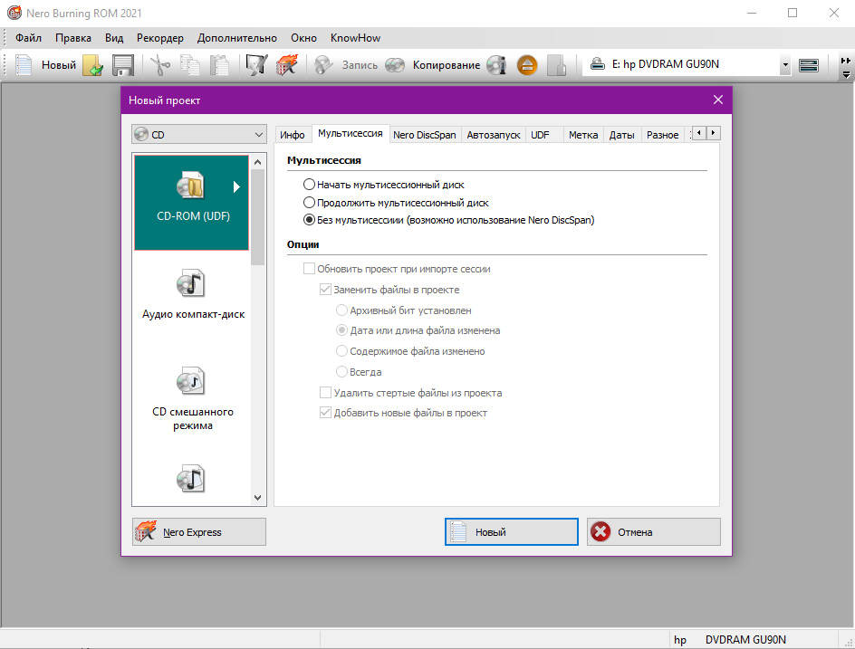
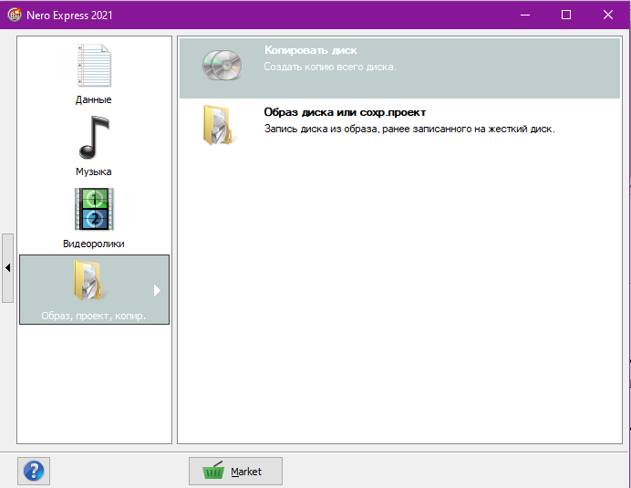
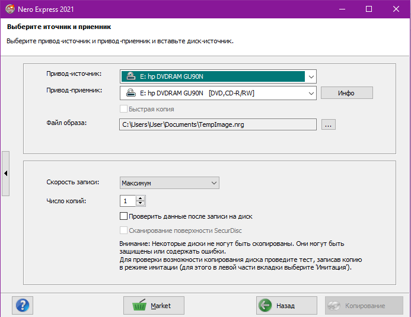

Nero
Рисунок 1 - Nero
Программа Nero служит средством записи ваших файлов на оптические диски. С помощью нее можно перенести не только музыку, фото или видео, но и образы.
Рисунок 2 - Интерфейс программы
В состав данного приложения входит большое количество функций. Разберем те, которые непосредственно относятся к теме раздела.
Образ диска — система файлов со своей структурой и иерархией, которая читается с виртуального привода или записывается на физические носители. Рассматриваемый сегодня софт позволяет записать имеющийся образ на оптический диск при помощи инструмента «Nero Express». От пользователя требуется только указать сам файл и задать некоторые дополнительные настройки. Проверим, как этот инструмент работает.
Так как создать образ диска у меня не получилось в виду технических проблем с моим ПК, рассмотрим функцию копирования диска. Для этого в ленте выбираем вкладку «Nero Express». Откроется диалоговое окно, в котором нужно выбрать опцию «Образ, проект, копир.» и нажимаем на «Копировать диск».
Рисунок 3 - Вкладка "Nero Express"
Далее нужно отредактировать настройки. Выбираем привод-источник, привод-приемник и файл образа. После редактируем скорость записи и число копий, необходимых пользователю. Нажимаем на кнопку «Копировать». К сожалению, как и в случае с программой DEAMON Tools, свободного носителя у меня не оказалось, поэтому результат работы программы увидеть не удастся.
Рисунок 4 - Настройки копирования дисков
Помимо этого, приложение позволяет записывать на диск видео, музыку, редактировать их, перемещать файлы в другие приложения, создавать обложки дисков и многое другое.
Это все возможно благодаря следующим модулям:
В целом, работа в Nero показалась мне довольно интересной и не сильно сложной. У нее большой функционал, что является одновременно и плюсом, и минусом приложения. Плюс в том, что она соединяет все работу нескольких программ и позволяет «не засорять» ПК огромным количеством других приложений. Минус же – большая вероятность потеряться и запутаться в огромном количестве опций, которые чаще всего не используются. Тем не менее данная программа уникальна и определенно полезна в использовании, но я бы не стала ее советовать пользователям в случаях, когда вам всего лишь нужно создать образ диска.